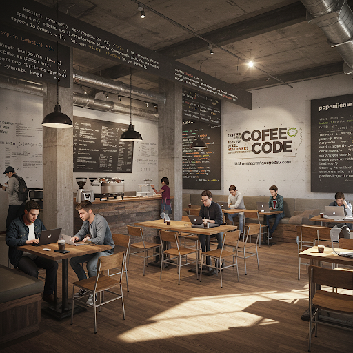

Coffee Code
A nossa cafeteria é um ponto de encontro para mentes criativas e apaixonadas pela tecnologia, nosso espaço foi feito especialmentes para programadores, com internet rápida, tomadas por todos os lados, e um cardápio repleto de cafés especiais. seja para tomar um café ou para programar, o Coffee Code é o cantinho que você precisa.
História
Tudo começou com uma rotina desgastante, horas na frente das telas, sem um lugar aconchegante para trabalhar, a casa era solitária, as cafeterias barulhentas, sem tomadas suficientes e sem aquela vibe de aconchegancia, então pensamos, sera que existe um lugar feito por programadores para programadores? Então foi assim que foi criada a Coffee Code, pensada especialmente para desenvolvedores, com uma vibe aconchegante e acolhedora, com um cardápio repleto de bebidas inspiradas no mundo da programação. ao longo do tempo a Coffee Code não era mais uma cafeteria qualquer, e sim um refúgio da vida real, para desbravar o mundo facinante da programação. Aqui cada ideia é transformada em inovação.
.png)